Investing & Wealth
Start Investing Today, Even If You Have Little Money
Many people believe investing is only for the wealthy. The truth? You don’t need thousands of dollars to get started.
Ideas for everyday money decisions
Practical guidance on saving, investing, careers, community, and the money choices that shape what comes next.
Latest article · Investing & Wealth
Many people believe investing is only for the wealthy. The truth? You don’t need thousands of dollars to get started.
Read the articleThe IYM journal
Choose a topic or browse the full collection.
Investing & Wealth
Many people believe investing is only for the wealthy. The truth? You don’t need thousands of dollars to get started.

Investing & Wealth
Managing subscriptions is a key component of financial literacy because it helps individuals take control of their expenses, prioritize spending, and achieve…

Investing & Wealth
Spending on What Truly Matters Spending on what truly matters means aligning your financial choices with your values, goals, and long-term happiness.
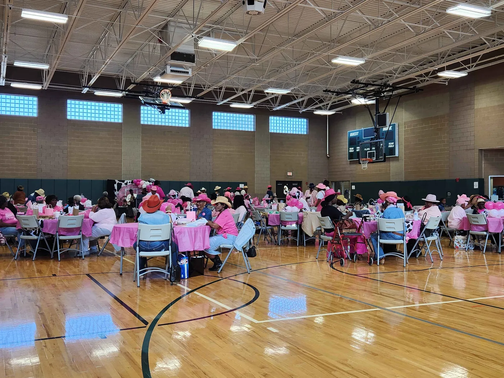
Budgeting & Saving
Setting financial goals is one of the most powerful steps you can take toward achieving financial stability, security, and long-term success.
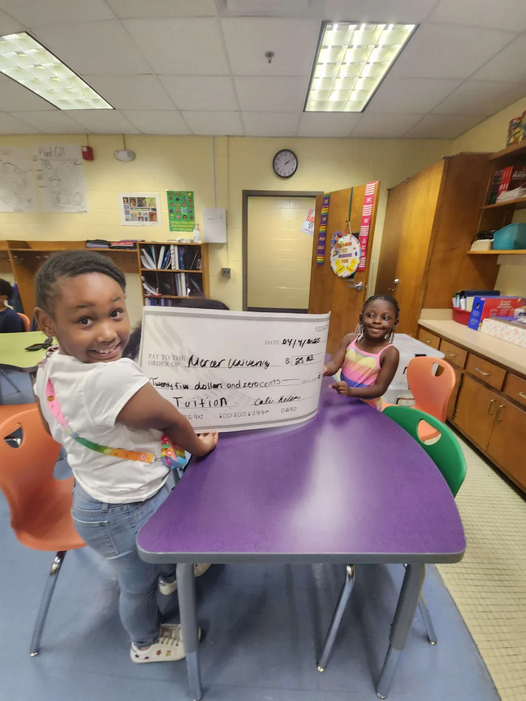
Investing & Wealth
What Is FIRE (Financial Independence, Retire Early)? FIRE stands for Financial Independence, Retire Early, a lifestyle movement that prioritizes saving and…
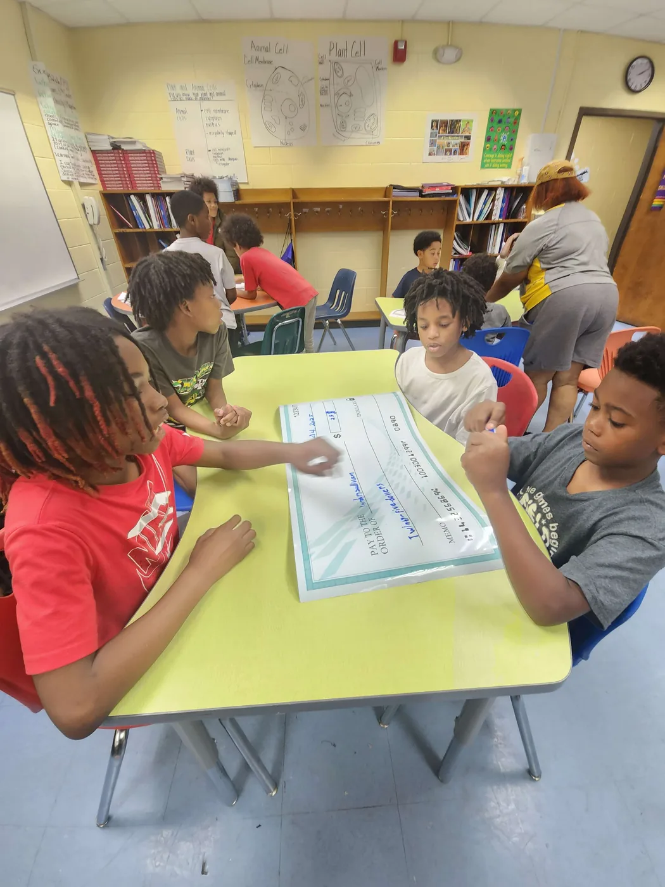
Budgeting & Saving
When it comes to building a strong foundation with budgeting, financial discipline and smart money management play a crucial role.
Investing & Wealth
Your Savings, Your Future: Maximize the 2025 Contribution Opportunities Are you ready to take your financial goals to the next level?
Financial Literacy
The Effects of Inflation on Daily Life and Strategies to Combat It Inflation, the gradual increase in the cost of goods and services, affects nearly every…
Investing & Wealth
The Needs of the Community: How Money Fuels Society’s Functions and Supports Our Collective Well-being In every community, the flow of money plays a crucial…
Career & Entrepreneurship
Establishing yourself for the future is one of the most crucial decision that you will ever make in life.
Investing & Wealth
January 16, 2024|Entrepreneurship, Finance Development, Generation Z, Goal Setting, Mental Health, Mindset & Motivation, My Life, Personal Development…
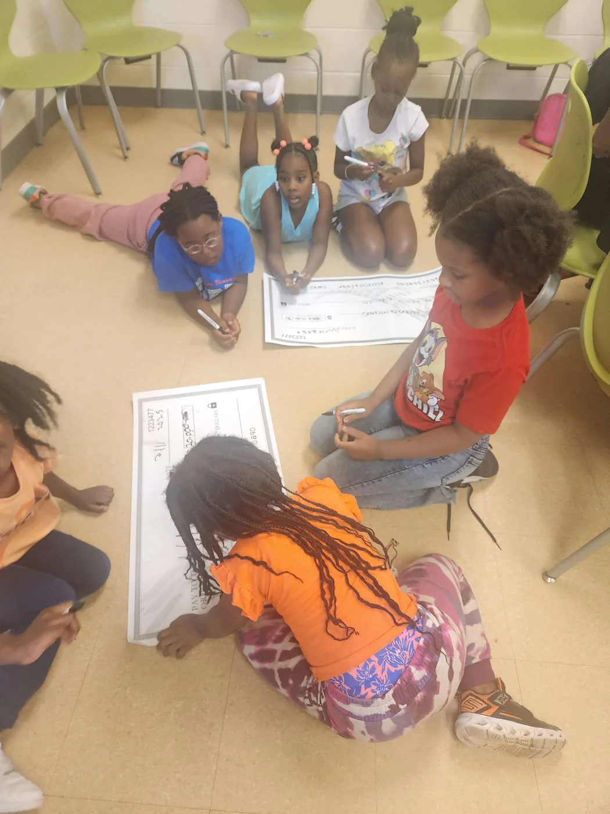
Career & Entrepreneurship
Choosing to work with a focus on learning and personal growth, rather than just for money, is often linked to a the mindset that values becoming better…
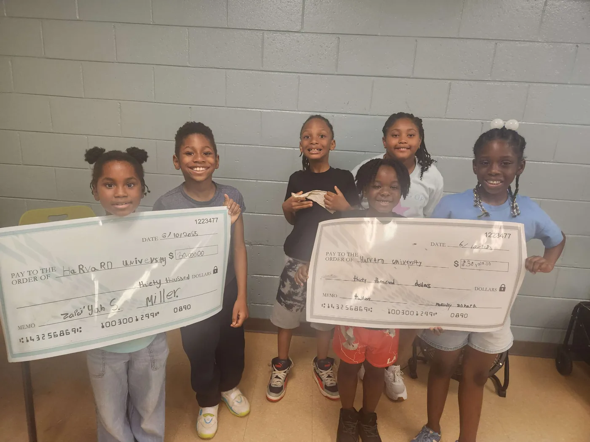
Investing & Wealth
Finding a balance in saving and investing involves managing your finances in a way that allows you to meet both short-term and long-term financial goals…
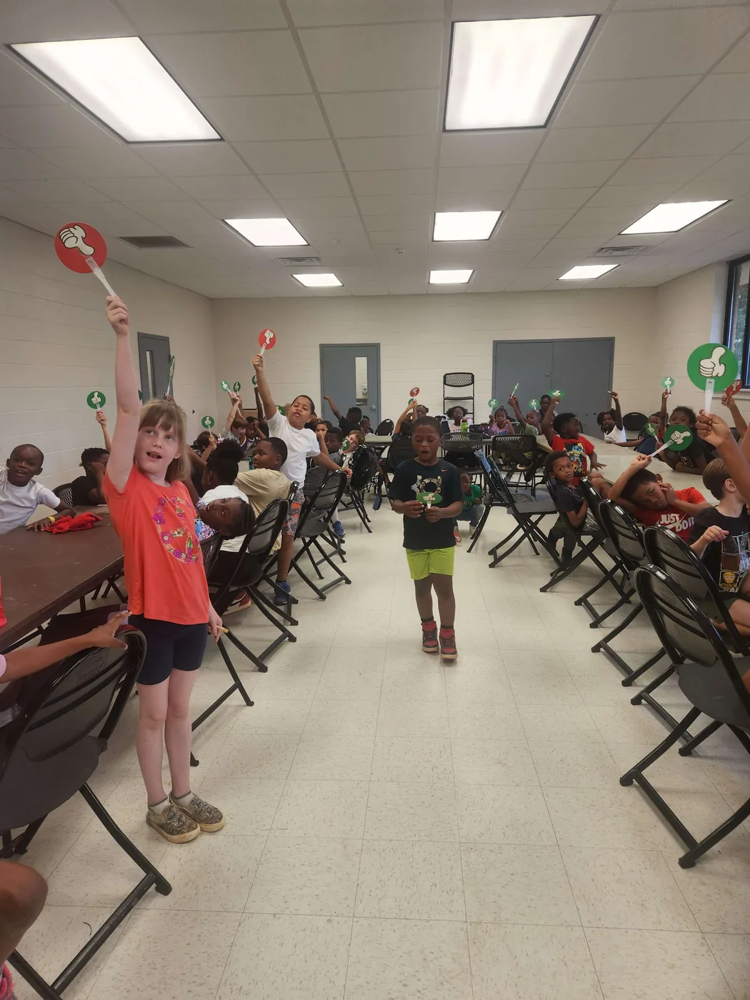
Investing & Wealth
Investing wisely involves careful consideration of various factors such as your financial goals, risk tolerance, time horizon, and current market conditions.
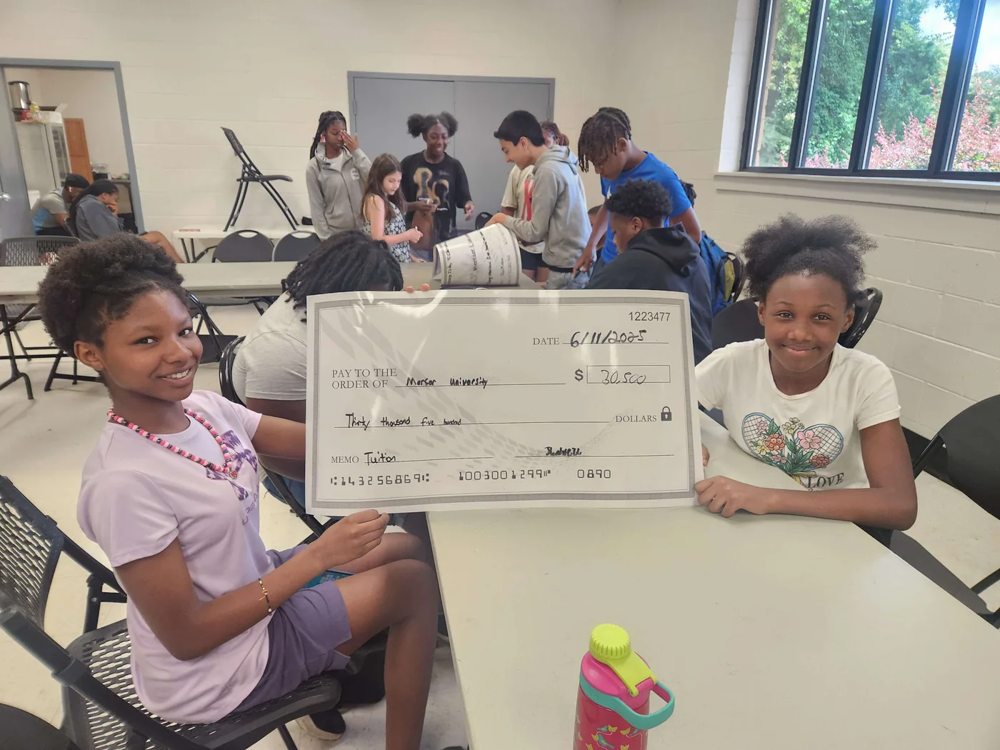
Investing & Wealth
Real estate investing can be a lucrative and rewarding venture, but it's important to understand the basics before diving in.

Investing & Wealth
Debt awareness refers to the understanding and acknowledgment of one's financial obligations or liabilities.
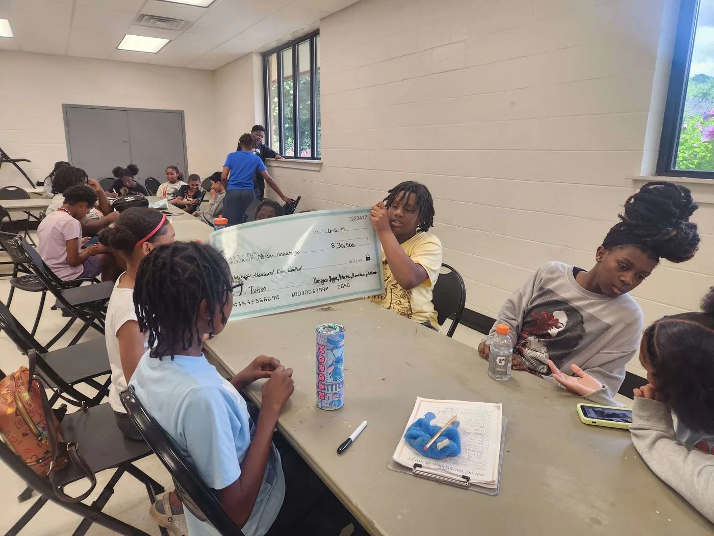
Career & Entrepreneurship
Career development plays a significant role in your life, allowing you to fulfill the best version of yourself—the version you've always aspired to be.
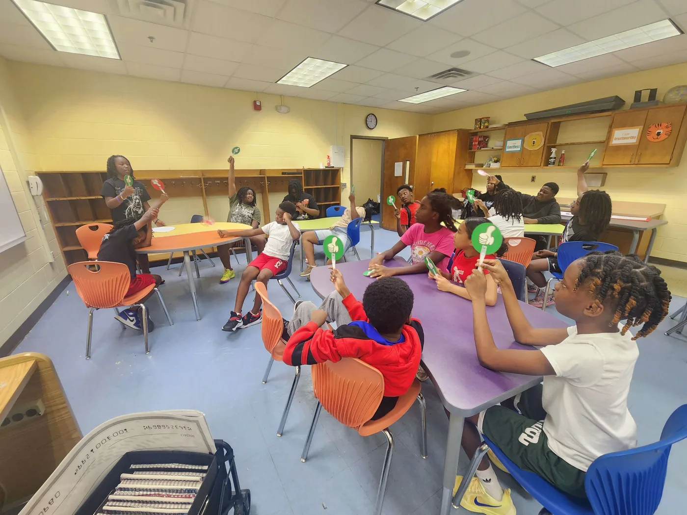
Community & Giving
Giving and charity are two of the most powerful expressions of humanity. They reflect our ability to care for others, to share our resources, and to make a…
Mindset & Goals
People have different beliefs about money and I can't always relate. My opinion is formed based on my own beliefs.
Mindset & Goals
Can you imagine how much money have passed through your hands in your entire life span? The thought is really scary.
Mindset & Goals
Take charge of your own life, no matter who you are or where you come from, you have the ability to LEAD YOUR LIFE based on the decisions you make today.
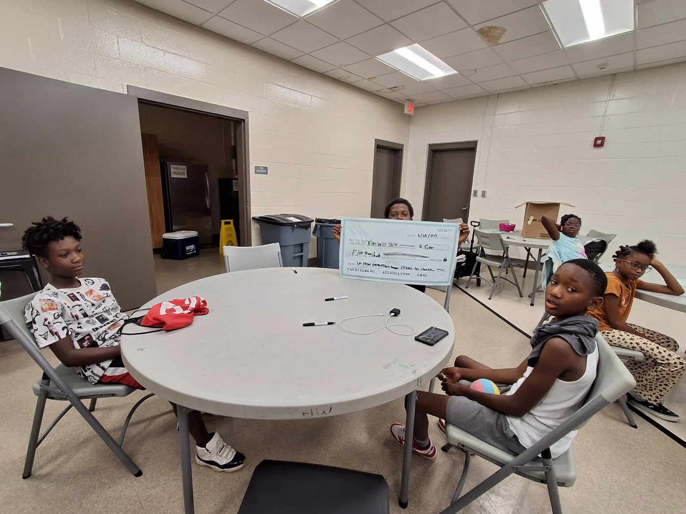
Budgeting & Saving
Money to me is the significance of freedom. If done right, it allows you to do things on your terms most of the time.
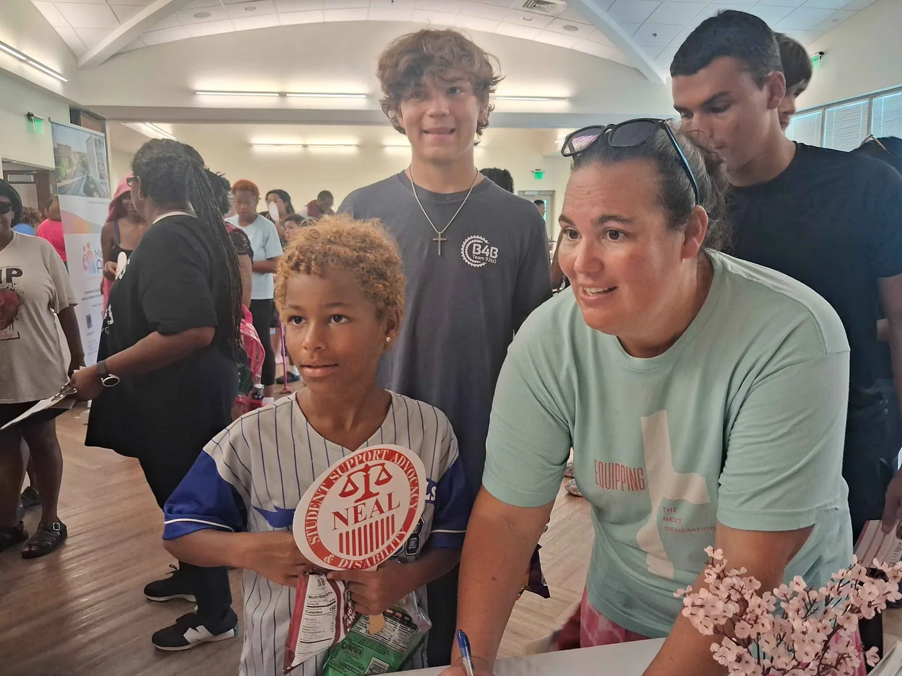
Investing & Wealth
So you just got paid... Before you spend $1, I need you to pay and save for the things that you need to pay/save for before spending the money you want to…
Mindset & Goals
You’ve heard the saying “when you fail to plan you plan to fail”, so very true. If you don’t have a roadmap for your finances how do you know what direction…
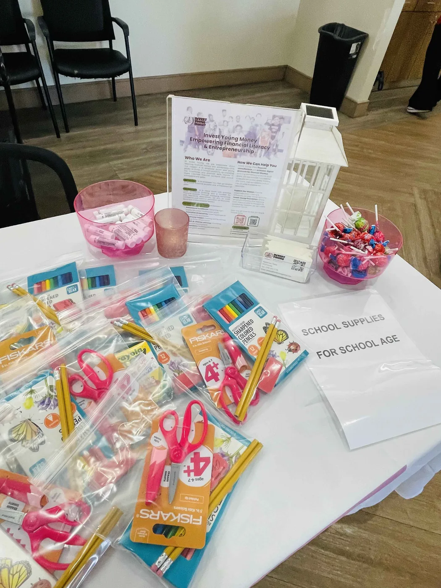
Investing & Wealth
Six things you can do right now to make your 2021 a better year is to make small adjustments that can create better money habits.
No articles match this topic yet.
Explore practical tools for learners, families, and the communities supporting them.
Browse learning resources